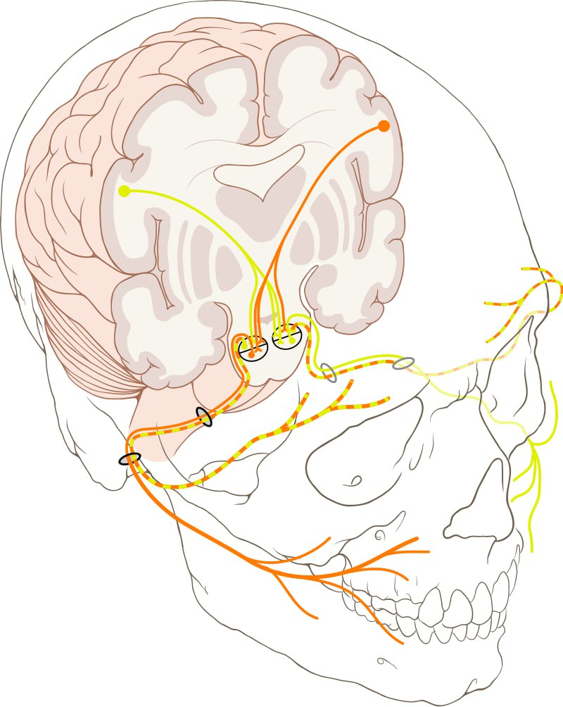

Yuz nervi — bosh miya nervlarining 7-jufti; aralash nerv, tarkibida harakatlantiruvchi va sezuvchi tolalari boʻladi. U miya koʻprigi bilan uzunchoq miya orasidan chiqib, ichki eshituv teshigi orqali yuz nervi kanaliga kirib qayriladi. Nogʻora boʻshligʻining ichki devori boʻylab oldin orqaga, soʻngra pastga yoʻnalib, chakka suyagining soʻrgʻichsimonbigizsimon oʻsiqlari oʻrtasida joylashgan teshikdan tashqariga chiqadi. Kanal ichida yuz nervidan katta toshsimon nerv bilan eshituv tori nervi ajraladi. Katta toshsimon nerv (tarkibida parasimpatik tolalar bor) chiqib, quloq oldi beziga boradi. Eshituv tori nervi esa yuz nervidan ajralgach, oʻrta quloq boʻshligʻidan tashqariga chiqib, uch shoxli nervning til nervi shoxi bilan qoʻshiladi va tilning soʻrgʻichlariga (taʼm bilish), til osti hamda pastki jagʻ osti bezlariga tolalar tarqaladi. Yuz nervi soʻrgʻichsimonbigizsimon teshikdan tashqariga chiqqach, quloq oldi bezining ichiga kirib, bir qancha tarmoqlarga ajraladi. Nervning harakatlantiruvchi tolalari yuzdagi mimika muskullarini va boʻyindagi teri osti muskuli bilan ikki qorinchali muskulning orqa qorinchasini innervatsiya qiladi.
